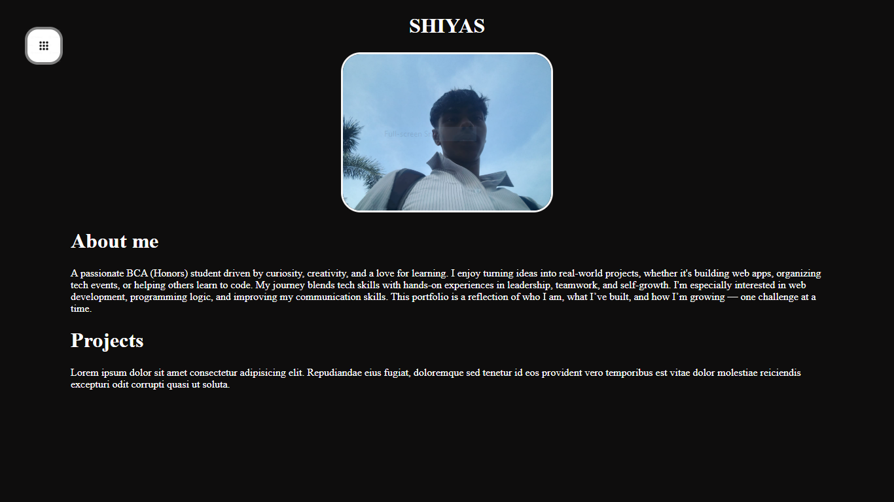

P-recipe

P-recipe is a web application dedicated to sharing and exploring recipes. Designed for casual home cooks and this project offers a user-friendly interface for browsing, viewing, and discovering a variety of dishes.
View moreRaw Portfolio
This project is my personal portfolio website, designed to present a comprehensive overview of my professional journey, skills, and accomplishments.
View more